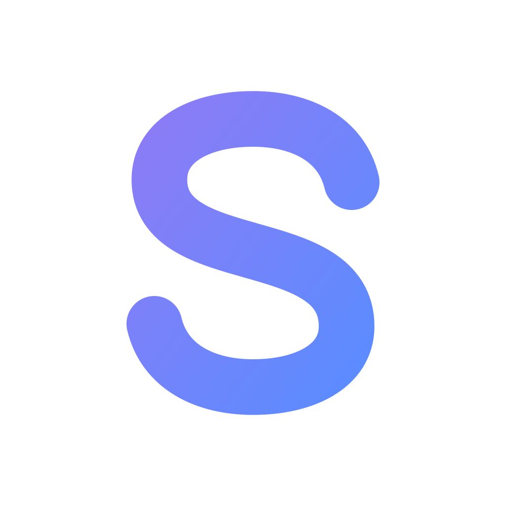
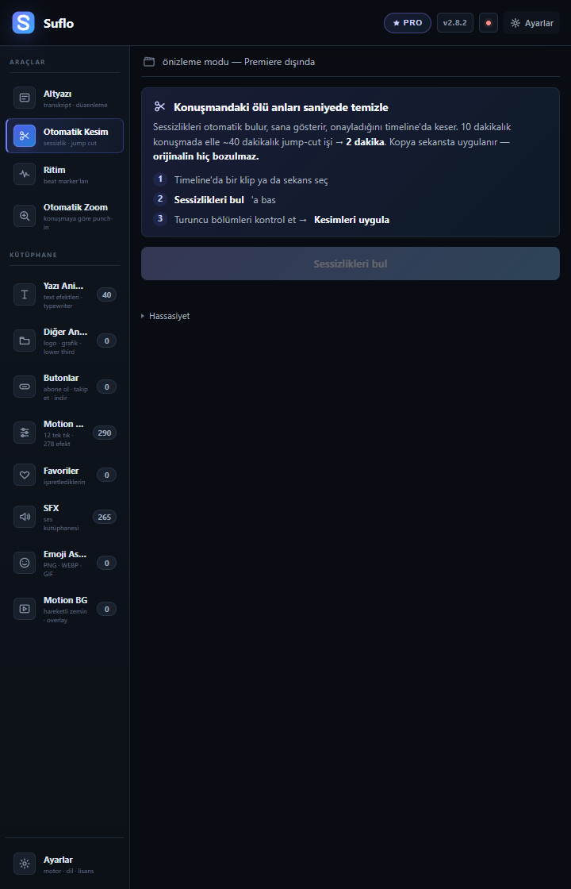
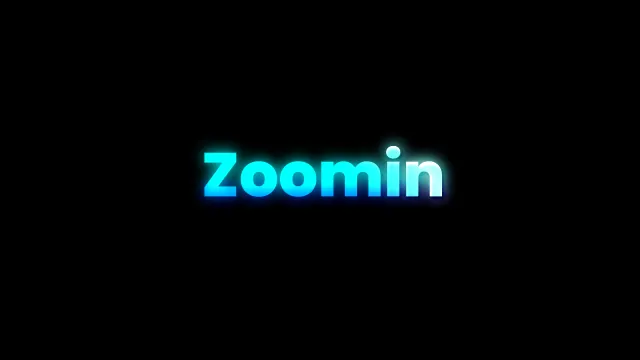
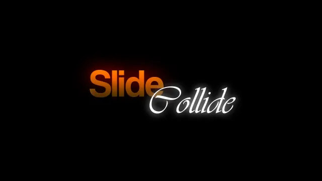
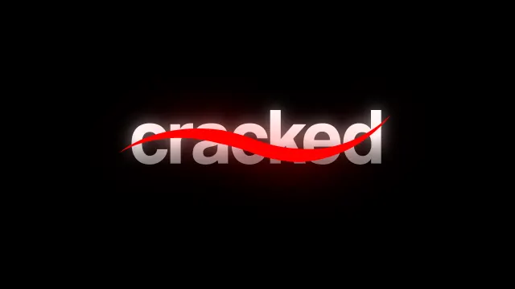
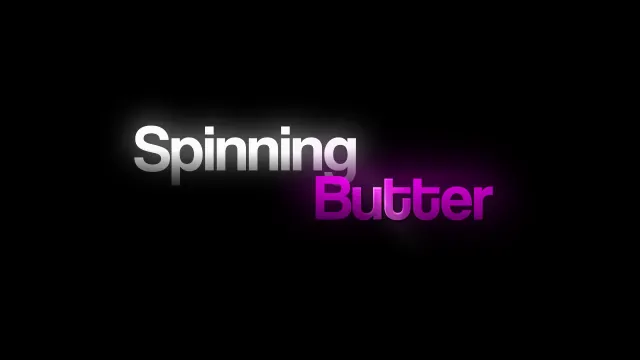
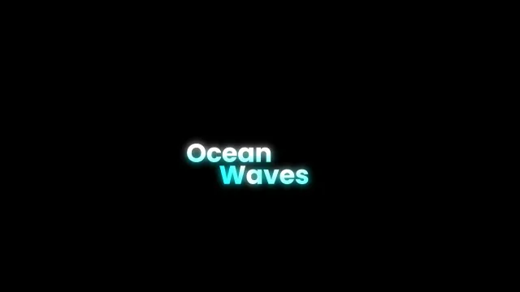
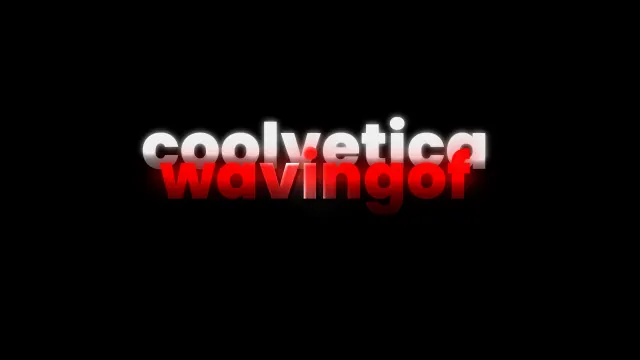
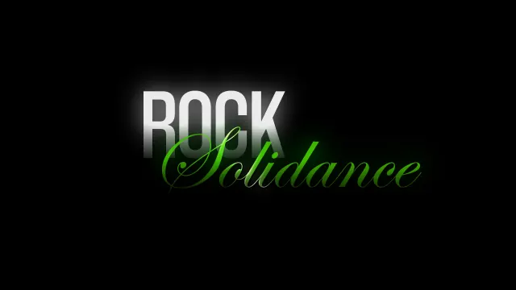
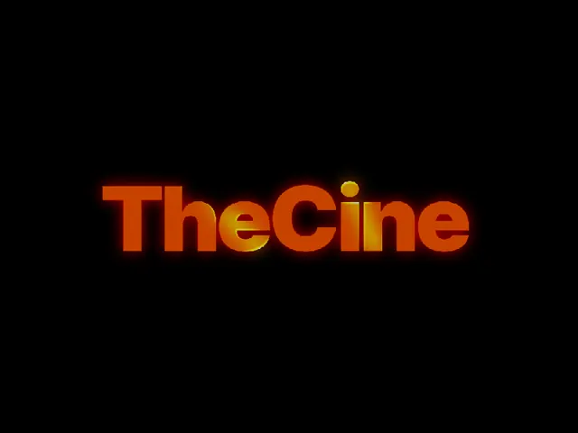

Suflo
ÜCRETSİZ · SINIRSIZ · İNTERNETSİZ
PREMIERE’E
PREMIERE’E
TÜRKÇE ALTYAZI.
ÜCRETSİZ.
Videonu seç, altyazını çıkar.
Türkçe dahil 99 dil; kredi de yok, kullanım sınırı da.
PRO’DA EKSTRA KURGU KİTİ
40YAZI ANİMASYONUZoom In · Cracked
769SFXWhoosh · Impact
290HAREKET PRESETİSlide · Zoom · Shake
262MOGRTHazır efekt kataloğu
30MOTION BGHareketli arka plan
MAGIC CUT•AUTO ZOOM•BEAT MARKERPRO

DAHA HIZLI KURGU İSTEYENESUFLO PRO1.250 TL749 TL
Suflo
NASIL ÇALIŞIR?03 / 10
KURULUMDAN SONRASI BU KADAR
VİDEONU SEÇ.
VİDEONU SEÇ.
ALTYAZIYI AL.
İNDİR & KURsuflo.app’ten indir, kurulum dosyasını aç.
ALANI SEÇSeçili klip · In–Out · tüm sekans
DÜZELT & UYGULAMetni düzelt, timeline’a gönder veya SRT olarak al.
VİDEO→AI METİN→TIMELINE
Suflo
PRO KURGU ARAÇLARI06 / 10
KURGUNUN EN ÇOK UĞRAŞTIRAN YERLERİ
SESSİZLİKLERİ KES.
SESSİZLİKLERİ KES.
ZOOM’U TEK TEK YAPMA.

Sessizlikleri bulur. Kontrol edersin, onayladığını uygular.

Konuşmanın vurgulu yerlerine seçtiğin tarzda zoom ekler.
03BEAT MARKER
Müziğin ritmini bulur, marker’ları timeline’a ekler.
Suflo
PRO YAZI ANİMASYONLARI07 / 10
PRO’DAKİ EN GÖSTERİŞLİ KISIM
YAZI ANİMASYONLARI
YAZI ANİMASYONLARI
PANELİN İÇİNDE.

ZOOM IN01

SLIDE COLLIDE02

CRACKED03

SPINNING BUTTER04

OCEAN WAVES05

COOLVETICA WAVE06

ROCK SOLIDANCE07

JITTER SHINE08

GERÇEK PANEL GÖRÜNÜMÜ
ÖNİZLE.
TEK TIKLA EKLE.
TEK TIKLA EKLE.
Ara, favoriye al ve doğrudan timeline’a gönder.
40 PRO EFEKTKENDİ GÜNCELLENİR